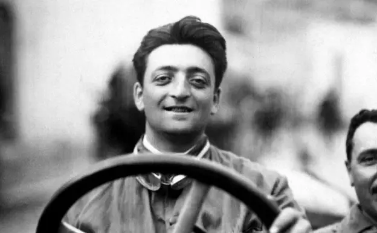

Welcome to Ferrari Museum
Experience the legacy of Ferrari through our exclusive collection of iconic vehicles.
Ferrari is a luxury sports car manufacturer from Italy, renowned for its outstanding performance, aerodynamic design, and cutting-edge technology. Founded by Enzo Ferrari in 1939, the brand is synonymous with its iconic red color and the Cavallino Rampante logo . With a legendary history in motorsports, especially in Formula 1, Ferrari remains a symbol of exclusivity, innovation, and the ultimate dream for car enthusiasts worldwide.
The Founder
He was born in Modena, but in 1916, his father died of the flu. He built his company by making several supercars, sports cars and racing cars that bore his name and were given the 'Prancing Horse' emblem. The prancing horse emblem was inspired by a painting that adorned the fuselage of a fighter plane flown by Francesco Baracca in World War I. Initially, Ferrari placed the engine at the front of the car, like other cars. However, since 1961, the engines of Ferrari cars have been placed at the back. Enzo Ferrari died in 1988 and his name is immortalized as one of the car brands.
The CEO
Benedetto Vigna is an Italian physicist and business executive currently serving as the CEO of Ferrari. Born on April 10, 1969, in Potenza, Italy, he earned a physics degree from the University of Pisa in 1993. Before joining Ferrari, Vigna worked at STMicroelectronics, where he pioneered microelectromechanical systems (MEMS) technology, contributing to innovations like 3D motion sensors used in Nintendo Wii controllers. In September 2021, he became Ferrari's CEO, bringing extensive experience in technology and innovation to the luxury automotive brand.